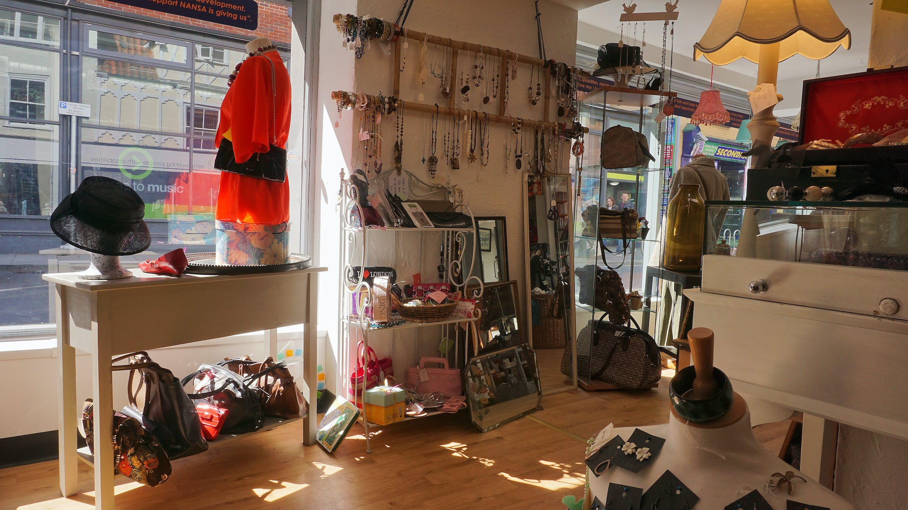

A GUIDE TO FINDING YOUR PERFECT STYLE

You're probably wondering? Okay, now what?


1. Fashion is a form of self-expression. So, let's start by asking ourselves a few questions to ease into this journey. Look back to your childhood. What colors, patterns, and designs were you drawn to? Did you have a favorite piece of clothing? Why was it your favorite?
I'll give you an example. When I was about 4 years old, I loved shiny things. I never owned any myself, but when I walked past boutique stores, I always stared a little longer at metallic dresses that caught the sunlight. As I grew older and got to know myself better, I realized that I could incorporate this love of shiny things towards accessorizing. While I may not be able to afford those boutique dresses, I channeled my love for metallics into finding creative ways to incorporate metallic jewelry into my outfits!
Asking simple questions like these will allow you to better understand what you like, why, and where to look for these things.
Once you have those answers. Ask yourself today, the same questions. How do your answers vary? Are they similar? Or have they changed since your childhood? What do you admire on others today?
If you can better understand the evolution of your style, you have more ground to choose from! Self-exploration is the first step in finding your style, observe yourself, observe others, have fun with it. Be open to